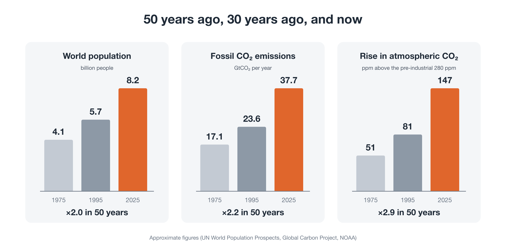
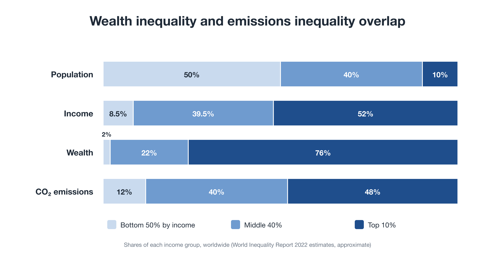
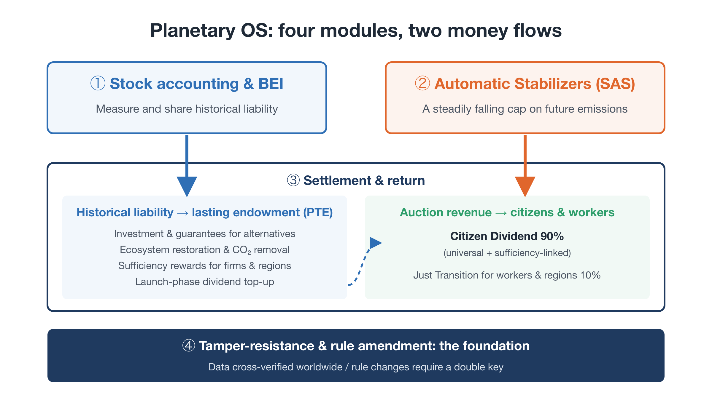
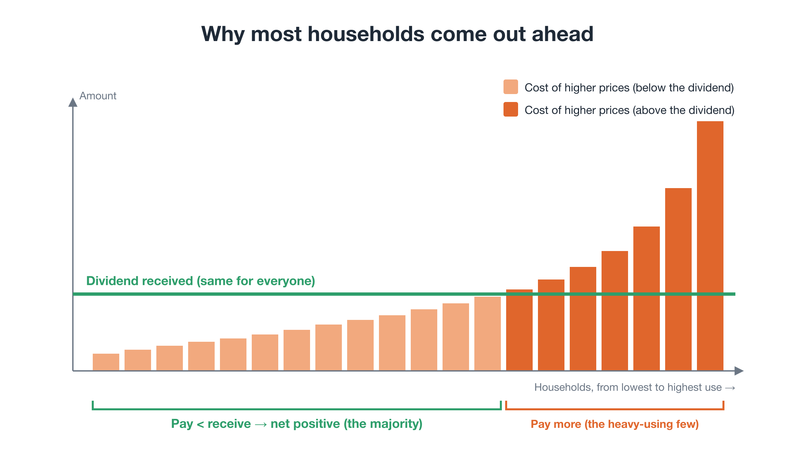
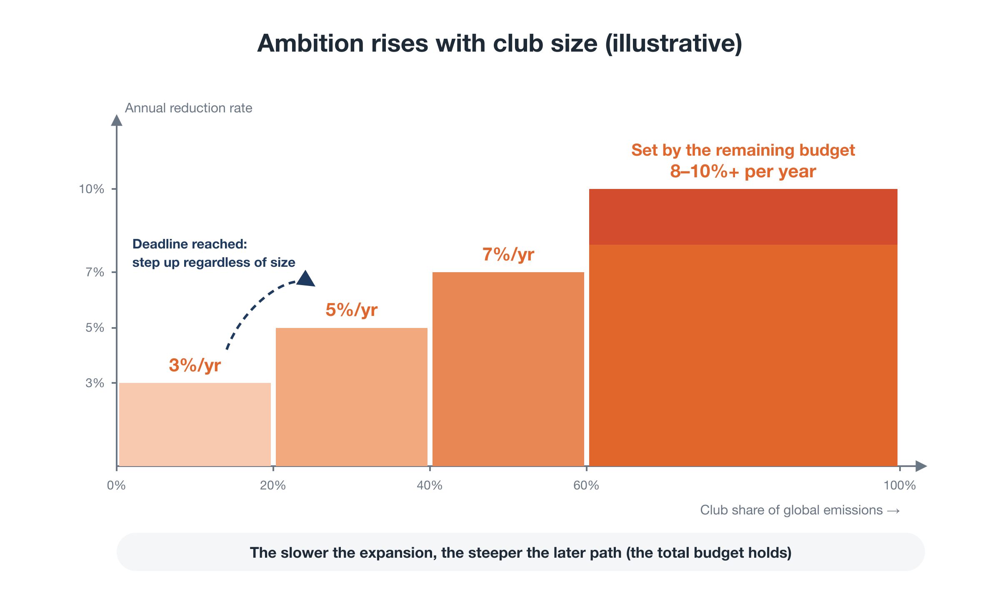

Package proposal · working draft
Steering Within Limits
Three proposals for a civilizational transition: Youth GCC, the Global Citizen Will Platform, and Planetary OS
Why now
In 50 years, the world changed more than our rules did

The diagnosis
Not a shortage, but a runaway
- Efficiency gains are swallowed by overcompetition
- Benefits flow into asset prices, while daily life gets harder
- Everyone acting rationally produces a collective failure, like a theater audience all standing on tiptoe
The diagnosis
Wealth and emissions are concentrated in the same hands

The transition
From a civilization that grew without steering, to one that steers within limits
- Planetary limits defined strictly, as guardrails
- Freedom for life and business within them
- Continual correction by data and pre-agreed rules
- Goals set democratically, including for future generations
Three gaps, three proposals
Who, how, and what
A · Youth GCCA youth-led global citizens' congress. A World Citizens' Assembly selected by lot, a World Policy Institute, a World Policy Laboratory
B · PlatformA federation of existing movements that makes support visible and connects it to decisions
C · Planetary OSOperating rules under which reducing pays
A · Youth GCC
A second political circuit, beside states
- World citizens raise problems; experts design at least three options; citizens deliberate and choose
- Policies are tested before they are scaled, and failures are published
- It begins with a duty to respond, not a power to compel: states publish why they adopt or reject
- Legitimacy is earned, not declared
B · Global Citizen Will Platform
Federation, not competition
- Existing movements keep their names and campaigns, and join as Co-Initiators
- Support for concrete proposals is made visible against planetary indicators
- Four channels to decisions: multilateral, legal, electoral, markets
- Influence through legitimacy and numbers, not coercion
C · Planetary OS
Four modules, two money flows

C · Planetary OS
Reducing pays: at least 70% of people come out ahead

C · Planetary OS
Scaling through a club worth joining

One question for politics
"Here is a working design. Will you connect to it?"
Stage 1: the first edition of the Planetary OS Standard · a public dividend simulator · the launch of Youth GCC
Join as a Co-Initiator · Read more: the package proposal and the series